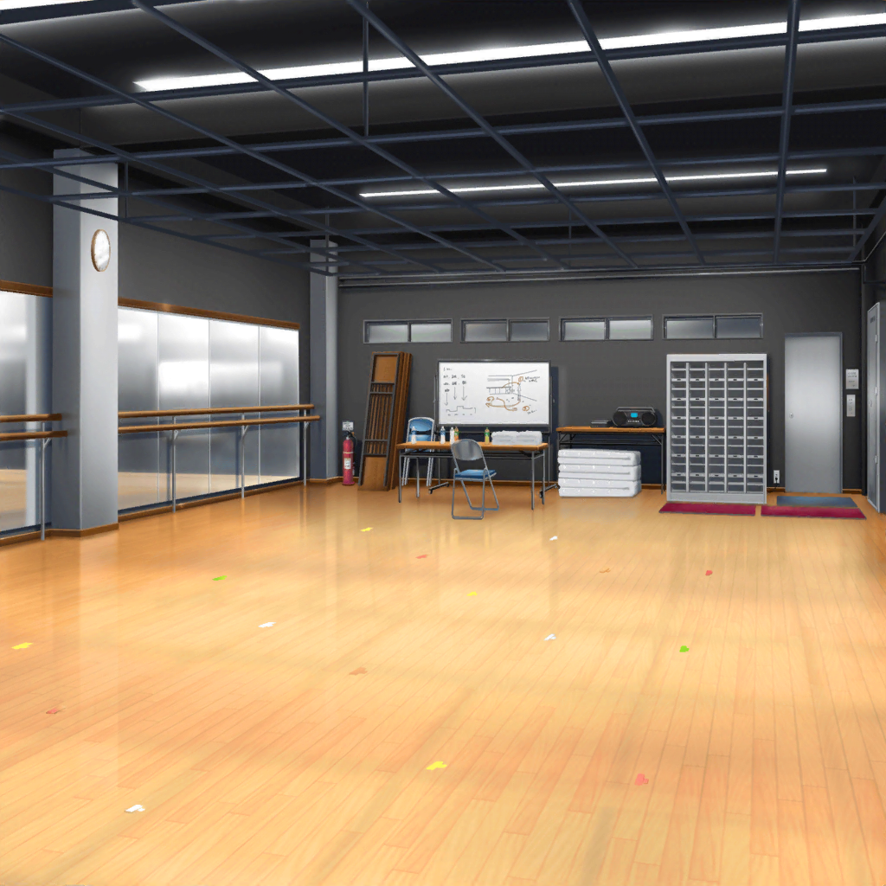

稽古場
千聖
『ゴホッ、ゴホッ……
わかるんだよ、もう、あたしは長くないって……』
ベル役の女優
『マリー、待ってて、私がなんとかしてみせるから！
……だからもう少しがんばって』
千聖
『あたしはもう、これ以上、
お姉ちゃんに負担をかけたくないんだよ……』
千聖
『……あれ、この新聞記事……新人女優オーディション開催！？
優勝者は舞台に出演できて、しかも賞金付きって……
お姉ちゃん、これ……』
ベル役の女優
『これ……これよ！
マリー、私、これに応募するわ！
あなたのために勝ってみせる！』
千聖
『お姉ちゃん……』
宮川
ストップ！
おいおい、白鷺くん！ どうしてその声の出し方になるんだ？
全く熱くないじゃないか！
千聖
どうしてって……
千聖
（私は私なりに考えてやっているのに！）
宮川
君は役の表面的な部分しか捉えられていない。
やるべき事をやっている『つもり』になっているだけだろう。
妹がどういう心境でいるのか、考えてみたか？
千聖
……っ
宮川
今の君は、台本の通りに動いているだけだ。
自分で考えて動けないなら帰れ
彩
（こ、怖い……怖すぎるよ！）
イヴ
（私、モデルの撮影の時でも
こんなに厳しく言われたことないです……っ）
麻弥
（さすがにプロの現場は厳しいです……）
日菜
（役者をしごくとは聞いてたけど、
予想以上にきついこと言われるんだなぁ……）
千聖
お言葉ですが、何がいけないのか
具体的に指示していただけませんか？
どこをどう直せばいいのかわからないと、修正のしようが……
宮川
それは自分で考えることだ。
自分で答えを出さないと意味がない。
これから休憩を挟むから、その間にしっかり考えなさい
千聖
は、はい……
休憩中
彩
千聖ちゃん、お疲れさま！
千聖
……ああ、彩ちゃん。来ていたのね
彩
みんなで見学させてもらってたんだよ。
すごく厳しい稽古でびっくりしちゃったよ……
イヴ
怖かったです……
自分が怒られてるように感じてしまいました……
麻弥
本当ですね……
ジブンが千聖さんと同じ立場だったら、上手くやらなきゃって
思ってしまって、余計に上手くできなさそうです……
彩
千聖ちゃん、大丈夫？ つらくない？
千聖
大丈夫よ。
厳しい先生だということはわかっていたことだもの
彩
そっか、千聖ちゃんがつらくないならいいけど……
大変だと思うけど、千聖ちゃんならできるよ！
がんばってね！
彩
千聖ちゃん、昔からこういうお仕事しててこの道のプロだし、
きっと乗り越えられるよ！
麻弥
そうですよ、千聖さんが優秀だから、
求められることのレベルも高いんだと思うんです。
厳しいこと言われても気にしないでくださいね
イヴ
私もそう思いますっ！
ファイトですっ
千聖
……みんな、ありがとう
千聖
（宮川先生の言うことがさっぱりわからなくて困ってるのよ！
期待に応えられない自分が情けない……）
日菜
んー……なんだか千聖ちゃん、普段の調子出てないみたいだけど、
どうかした？ 体調悪い？
イヴ
確かにチサトさん、顔色良くないですっ。
本当に大丈夫ですか？
彩
具合悪かったら、薬持ってるよ？
頭痛薬と、お腹の薬と……
千聖
……みんな、気にしないで。大丈夫だから
日菜
そう？ ならいいんだけど。
千聖ちゃんでも仕事で苦労することもあるんだねー
日菜
めずらしいよね。
あたし、千聖ちゃんならなんでもできるって思ってたよ
千聖
……
千聖
（私の気持ちも知らないで……）
千聖
……私が……なんて……思わないで
日菜
えっ？ 今なんて言ったの？
千聖
私がなんでもできるって思わないでよ！！
みんなもう帰って！
彩
えっ……
麻弥
千聖さん……！？
イヴ
ちょ……ちょっと待ってくださいっ！
急にどうしちゃったんですかっ？
チサトさんらしくないですっ
彩
わ、私たち、何か悪いこと言っちゃった？
そうだったら謝るから……
千聖
とにかく、今日はみんな帰って。
……お願いだから
日菜
みんな、千聖ちゃんこう言ってるし、今日のところは帰ろっか
千聖
……

芸能事務所
イヴ
チサトさん、どうしちゃったんでしょう……
あんなこと、普段なら言わないのに……
麻弥
あきらかにジブンたちを拒絶していましたよね……
イヴ
私、どうしてチサトさんが怒ったのかわからないです……
日菜
あたしもー。なんでだろ？
なんか悪いこと言ったかな？
彩
千聖ちゃん……